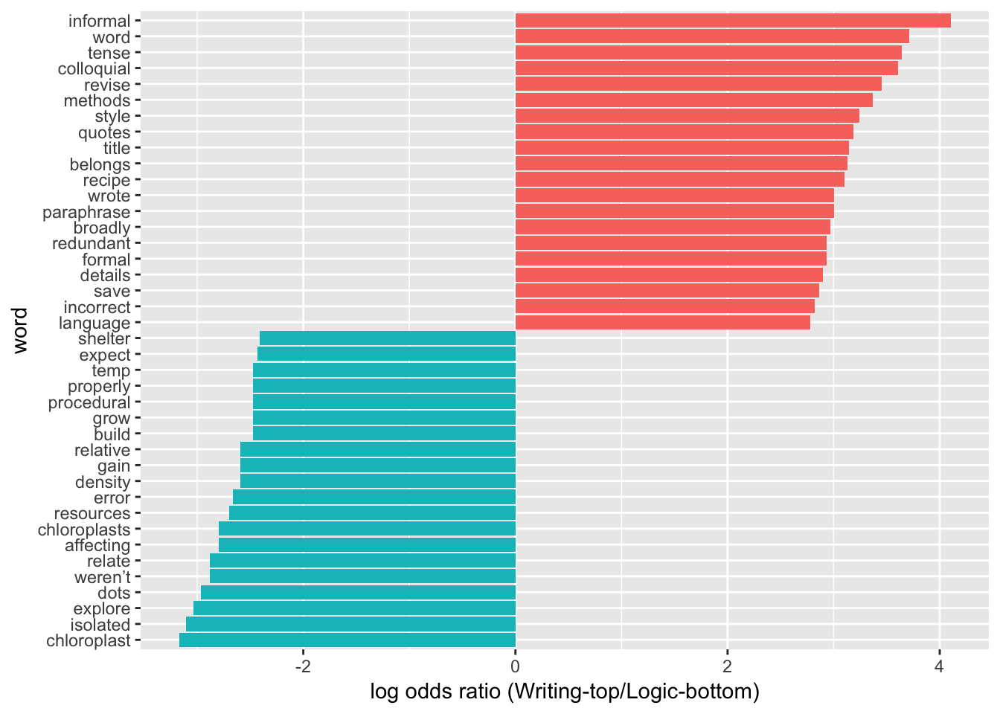

Data Intake & Initial Exploration
Dan Johnson
12/16/2018
The initial working dataset is an anonymized Excel table of 10,808 rows. One column has “TA comments” extracted from student lab reports. Each TA comment is stored as a separate row of the table, and is a mixed alphanumeric string of one or more words, numbers, and punctuation. Other columns record unique report, student, and TA IDs; grade assigned to the report; other standardized information about the original report from which the comment was extracted; and the hand-coded subject and structure of each comment.
Data Pre-Checks
Prior to import, review data table in Excel. Check:
- Vocabulary terms used in coding columns matches criteria in “codebook_for_comments.md”
- Data have been de-identified and recoded using pre-assigned anonymous IDs.
- Data table headers are in snake_case, and match tabulated list below. The same list is in the file “code_column_names.txt”
| Column Number | Column Name | Column Number | Column Name |
|---|---|---|---|
| 1 | unique.record | 15 | data.ok |
| 2 | report.id | 16 | citation.ok |
| 3 | sort | 17 | interpretation.ok |
| 4 | report.title (empty) | 18 | organization.ok |
| 5 | student (Std_nnn) | 19 | techflaws.ok |
| 6 | course | 20 | writing.ok |
| 7 | ta (TA_nnn) | 21 | comments.incorporated |
| 8 | lab | 22 | ta.comment |
| 9 | tag | 23 | code.subject |
| 10 | type.TA | 24 | code.structure |
| 11 | grade.TA | 25 | code.locus |
| 12 | grading.time | 26 | code.scope |
| 13 | Rank | 27 | code.tone |
| 14 | hypothesis.ok | 28 | code.notes |
Once all data are in correct format, export Excel file to CSV with name formatted as “coded_full_comments_dataset_SemYear.csv”
Initial Import and Post-Check
# Call in tidyverse, other required libraries.
library(tidyverse)
library(tidytext)
library(dplyr)
library(tidyr)
library(ggplot2)
library(scales)#This block reads in the full CSV into a starting dataframe named "base_data".
#Subsequent analyses call in subsets of "base_data".
base_data <- read_csv(file='data/coded_full_comments_dataset_Spring18anon.csv')
#If the TA comments dataset is imported correctly, there will be a dataframe of ~11,000 rows and 28 columns named as listed in the **Data Pre-Checks** table above.Given some data points may be entered incorrectly by instructors or students, I included several post-import data checks to ensure data have been properly coded and columns contain valid entries only.
#"Course" column should only have entries that correspond to 113, 114, 214, NA.
course<-unique(base_data$course)
#Entries in "TAs" column should match the anonymous IDs that correspond to the TAs assigned to the relevant courses in the semester being analyzed.
#If there are incorrect or extra anonymous IDs in this list, the mostly likely source of the error is improper de-identification of the Excel file prior to import.
ta<-unique(base_data$ta)
#"Lab" should only have entries that match the limited keywords in codebook.
lab<-unique(base_data$lab)
#Look at the NUMBER of unique anonymous student IDs. Should be within 10% of (but not more than) the combined enrollment of the 3 target courses for the semester.
student<-unique(base_data$student)
#Check that the list of "code.subject" topics here matches allowed terms in codebook.
subject<-unique(base_data$code.subject)
#Check that the list of "code.structure" terms extracted from the dataset and displayed here matches allowed terms in codebook.
structure<-unique(base_data$code.structure)Preliminary Exploration
The first question to answer before making deeper comparisons is are the comments obviously different between sub-categories? Before conducting detailed analyses I tried several iterations of different visual comparison strategies.
Log-Odds Text Comparison
The log-odds ratios method outlined below has been the most informative to date. The basic premise being tested is that certain words are more frequent in TA comments belonging to one sub-category, and less frequent in others. I first saw this approach as a way to compare word usage between separate Twitter accounts here: https://www.tidytextmining.com/twitter.html.
For simplicity I reduced the analysis to just the four most common comment subjects.
# Isolate table rows to compare. Then reduce larger dataframe to only 2 required columns of data.
frequency_writing <- filter(base_data, code.subject=="2. Writing Quality"|code.subject=="3. Technical and Scientific"|code.subject=="4. Logic and Thinking")
frequency_writing.subcolumns <- frequency_writing %>% select(1, 22:23)
# Tokenize phrases, remove stop words listed in standard reference file.
base_data_tokenized <- frequency_writing.subcolumns %>%
unnest_tokens(word,ta.comment) %>%
anti_join(stop_words)
#At this point the dataframe should have "Unique.Record" in column 1, "code.subject" in column 2, and the unnested "word" in column 3. All columns are class = "character". Stop words listed in the "stop_words" R reference data file have been removed.Comparing Pearson Correlations of Word Frequencies
If the words used by TAs in their comments differ between the categories, there should be fairly low correlations overall .
#Block below re-organizes the data for comparisons. This pattern sets "2. Writing Quality" as the first dataset, then all other data in remaining columns.
#Groups by code.subject, calculated proportional frequency in each group.
#Final step creates 4 columns: word, 2. Writing Quality, code.subject, proportion
#Stats need this format to be able to compare 2. WQ against other values.
base_data_tokenized_sorted2 <- base_data_tokenized %>%
group_by(code.subject) %>%
count(code.subject, word, sort=TRUE) %>%
mutate(proportion = n / sum(n)) %>%
select(-n) %>%
spread(code.subject, proportion) %>%
gather(code.subject, proportion, `3. Technical and Scientific`:`4. Logic and Thinking`)
#The dataframe called "base_data_tokenized_sorted2" is the final 4-column dataframe for statistical analysis. Individual words are in column 1, "2. Writing Quality" frequency is in Column 2, "code.subject" is in column 3, and "proportion" is in column 4. Columns 1 and 3 are class = "character", 2 and 4 are numeric ranges.
#This structure is needed in order to compare word (in Column 1) frequencies for 2. Writing Quality (Column 2) as Y values against the frequencies of those same words (in Column 4) as X axes. WHICH subset of X values to use is coded in Column 3.Pearson correlation between the frequency of words in Writing Quality versus Technical and Logic sub-categoris.
cor.test(data = base_data_tokenized_sorted2[base_data_tokenized_sorted2$code.subject == "3. Technical and Scientific",],
~ proportion + `2. Writing Quality`)##
## Pearson's product-moment correlation
##
## data: proportion and 2. Writing Quality
## t = 15.152, df = 1176, p-value < 2.2e-16
## alternative hypothesis: true correlation is not equal to 0
## 95 percent confidence interval:
## 0.3552434 0.4508669
## sample estimates:
## cor
## 0.4041588cor.test(data = base_data_tokenized_sorted2[base_data_tokenized_sorted2$code.subject == "4. Logic and Thinking",],
~ proportion + `2. Writing Quality`)##
## Pearson's product-moment correlation
##
## data: proportion and 2. Writing Quality
## t = 20.759, df = 946, p-value < 2.2e-16
## alternative hypothesis: true correlation is not equal to 0
## 95 percent confidence interval:
## 0.5140770 0.6016765
## sample estimates:
## cor
## 0.5594369START OF BROKEN SECTION
THERE IS AN ERROR HERE I CANNOT DEBUG! If I change “3. Technical and Scientific” to “2. Writing Quality”, the structure of the tibble breaks. It goes from the correctly sorted 4 columns to incorrectly sorted 3 columns. It is NOT A TYPO; I can literally copy/paste it in and out and break/correct the code.
I cannot use a different order, or any other format. I am at a loss.
# Isolate table rows to compare. Then reduce larger dataframe to only 2 required columns of data.
frequency_writing3 <- filter(base_data, code.subject=="3. Technical and Scientific"|code.subject=="2. Writing Quality"|code.subject=="4. Logic and Thinking")
frequency_writing3.subcolumns <- frequency_writing3 %>% select(1, 22:23)# Tokenize phrases, remove stop words listed in standard reference file.
base_data_tokenized3 <- frequency_writing3.subcolumns %>%
unnest_tokens(word,ta.comment) %>%
anti_join(stop_words)#Block below re-organizes the data for comparisons. This pattern sets "3. Writing Quality" as the first dataset, then all other data in remaining columns.
#Groups by code.subject, calculated proportional frequency in each group.
#Final step creates 4 columns: word, 2. Writing Quality, code.subject, proportion
#Stats need this format to be able to compare 2. WQ against other values.
base_data_tokenized_sorted3 <- base_data_tokenized3 %>%
group_by(code.subject) %>%
count(code.subject, word, sort=TRUE) %>%
mutate(proportion = n / sum(n)) %>%
select(-n) %>%
spread(code.subject, proportion) %>%
gather(code.subject, proportion, `2. Writing Quality`:`4. Logic and Thinking`)#Create groups by code.subject, calculates proportional frequency in each group.
#Final step creates 5 columns: code.subject, n, word, total, frequency.
base_data_tokenized_sorted3 <- base_data_tokenized3 %>%
group_by(code.subject) %>%
count(code.subject, word, sort=TRUE) %>%
left_join(base_data_tokenized %>%
group_by(code.subject) %>%
summarise(total = n())) %>%
mutate(freq = n/total)Re-organize the data for comparisons. This pattern sets 3. Technical and Scientific as the first dataset, then all other data in remaining columns.
#Groups by code.subject, calculated proportional frequency in each group.
#Final step creates 4 columns: word, 3. Technical and Scientific, code.subject, proportion
#Stats need this format to be able to compare 3. TS against other values.
base_data_tokenized_sorted3 <- base_data_tokenized3 %>%
group_by(code.subject) %>%
count(code.subject, word, sort=TRUE) %>%
mutate(proportion = n / sum(n)) %>%
select(-n) %>%
spread(code.subject, proportion) %>%
gather(code.subject, proportion, `2. Writing Quality`:`4. Logic and Thinking`)
#END OF BROKEN SECTIONI can run this block, but CANNOT COPY AND MODIFY THIS SECTION. It depends tables created using the broken code above. So I cannot run this part either.
#Create groups by code.subject, calculates proportional frequency in each group.
#Final step creates 5 columns: code.subject, n, word, total, frequency.
base_data_tokenized_sorted2 <- base_data_tokenized %>%
group_by(code.subject) %>%
count(code.subject, word, sort=TRUE) %>%
left_join(base_data_tokenized %>%
group_by(code.subject) %>%
summarise(total = n())) %>%
mutate(freq = n/total)base_data_tokenized_sorted2v3 <- base_data_tokenized_sorted2 %>%
select(code.subject, word, freq) %>%
spread(code.subject, freq) %>%
arrange(`2. Writing Quality`,`3. Technical and Scientific`)ggplot(base_data_tokenized_sorted2v3, aes(`2. Writing Quality`,`3. Technical and Scientific`)) +
geom_jitter(alpha = 0.1, size = 2.5, width = 0.25, height = 0.25) +
geom_text(aes(label = word), check_overlap = TRUE, vjust = 1.5) +
scale_x_log10(labels = percent_format()) +
scale_y_log10(labels = percent_format()) +
geom_abline(color = "red")
ggsave("Freqplot_3vs2.png", width = 10, height = 6)#I can get part way around the problem by re-using the same data and calling a different subset for the Y axis. Want to add comparisons of 3 vs 4, but same tables cannot be created because dataframe keeps breaking when I try to change 2. WQ.
base_data_tokenized_sorted2v4 <- base_data_tokenized_sorted2 %>%
select(code.subject, word, freq) %>%
spread(code.subject, freq) %>%
arrange(`2. Writing Quality`,`4. Logic and Thinking`)ggplot(base_data_tokenized_sorted2v3, aes(`2. Writing Quality`,`4. Logic and Thinking`)) +
geom_jitter(alpha = 0.1, size = 2.5, width = 0.25, height = 0.25) +
geom_text(aes(label = word), check_overlap = TRUE, vjust = 1.5) +
scale_x_log10(labels = percent_format()) +
scale_y_log10(labels = percent_format()) +
geom_abline(color = "red")
ggsave("Freqplot_4vs2.png", width = 10, height = 6)END of broken / limping section
Calculating and Plotting Log-Odds Pairs
2. Writing versus 3. Technical
word_ratios2v3 <- base_data_tokenized %>%
count(word, code.subject) %>%
group_by(word) %>%
filter(sum(n) >= 10) %>%
ungroup() %>%
spread(code.subject, n, fill = 0) %>%
mutate_if(is.numeric, funs((. + 1) / (sum(.) + 1))) %>%
mutate(logratio = log(`2. Writing Quality`/`3. Technical and Scientific`)) %>%
arrange(desc(logratio))word_ratios2v3 %>%
arrange(abs(logratio))word_ratios2v3 %>%
group_by(logratio < 0) %>%
top_n(20, abs(logratio)) %>%
ungroup() %>%
mutate(word = reorder(word, logratio)) %>%
ggplot(aes(word, logratio, fill = logratio < 0)) +
geom_col(show.legend = FALSE) +
coord_flip() +
ylab("log odds ratio (Writing-top/Technical-bottom)") +
scale_fill_discrete(name = "", labels = c("2. Writing Quality", "3. Technical and Scientific"))
#ggsave("Logplot_2vs3.png", width = 6, height = 10)3. Technical vs. 4. Logic
word_ratios3v4 <- base_data_tokenized %>%
count(word, code.subject) %>%
group_by(word) %>%
filter(sum(n) >= 10) %>%
ungroup() %>%
spread(code.subject, n, fill = 0) %>%
mutate_if(is.numeric, funs((. + 1) / (sum(.) + 1))) %>%
mutate(logratio = log(`3. Technical and Scientific`/`4. Logic and Thinking`)) %>%
arrange(desc(logratio))word_ratios3v4 %>%
arrange(abs(logratio))word_ratios3v4 %>%
group_by(logratio < 0) %>%
top_n(20, abs(logratio)) %>%
ungroup() %>%
mutate(word = reorder(word, logratio)) %>%
ggplot(aes(word, logratio, fill = logratio < 0)) +
geom_col(show.legend = FALSE) +
coord_flip() +
ylab("log odds ratio (Technical-top/Logic-bottom)") +
scale_fill_discrete(name = "", labels = c("3. Technical and Scientific","4. Logic and Thinking"))
#ggsave("Logplot_3vs4.png", width = 6, height = 10)2. Writing versus 4. Logic
word_ratios2v4 <- base_data_tokenized %>%
count(word, code.subject) %>%
group_by(word) %>%
filter(sum(n) >= 10) %>%
ungroup() %>%
spread(code.subject, n, fill = 0) %>%
mutate_if(is.numeric, funs((. + 1) / (sum(.) + 1))) %>%
mutate(logratio = log(`2. Writing Quality`/`4. Logic and Thinking`)) %>%
arrange(desc(logratio))word_ratios2v4 %>%
arrange(abs(logratio))word_ratios2v4 %>%
group_by(logratio < 0) %>%
top_n(20, abs(logratio)) %>%
ungroup() %>%
mutate(word = reorder(word, logratio)) %>%
ggplot(aes(word, logratio, fill = logratio < 0)) +
geom_col(show.legend = FALSE) +
coord_flip() +
ylab("log odds ratio (Writing-top/Logic-bottom)") +
scale_fill_discrete(name = "", labels = c("2. Writing Quality", "4. Logic and Thinking"))
#ggsave("Logplot_2vs4.png", width = 6, height = 10)Direct Comparison Using Only Words Appearing in All Subsets of Comments
I think this is less informative, but it does let me see the data more clearly.Basic strategy is to take all comments from base_data, unnest tokens, filter stopwords, count and sort remaining terms, then write back to a new datatable called ‘sortedwords.comments.all’. Calculate TOTAL words and store. Then calculate fractional frequencies for each word and store using mutate.
This is an early version, so likely has some poorly developed code blocks that could be refactored.
library(dplyr)
library(tidytext)
sortedwords.comments.all <- base_data_tokenized %>%
filter(!word %in% stop_words$word,
!word %in% str_remove_all(stop_words$word, "'"),
str_detect(word, "[a-z]")) %>%
count(word, word, sort = TRUE) %>%
ungroup()
#Calculate the number of words in total in the subset
total_words.all <- sortedwords.comments.all %>%
summarize(total = sum(n))
#Mutate table to calculate then append fractional word frequency in the text.
sortedwords.comments.all.fraction <- sortedwords.comments.all %>% as_tibble() %>% mutate(
all.fraction = (n*100)/total_words.all$total
)Summarize Word Frequencies in Subsets of Comments Based on ‘Subject’
Take subsets of comments from base_data_tokenized using code.subject as separating characteristic.
Other Analysis Approaches
This approach summarizes the word frequencies in the FULL set of TA comments first, then breaks them down into sub-groups. It has examples of other code bits as well.
The first block takes all comments from base_data, unnests tokens, filters stopwords, count and sort remaining terms, then writes results back to a new dataframe called ‘sortedwords.comments.all’.
TOTAL words is calculated and stored. Then fractional frequencies for each word are calculated and stored back to the dataframe using mutate.
# Tokenize phrases, remove stop words listed in standard reference file.
base_data_tokenized <- base_data %>%
unnest_tokens(word,ta.comment)
# An alternative approach to pulling out stopwords
sortedwords.comments.all <- base_data_tokenized %>%
filter(!word %in% stop_words$word,
!word %in% str_remove_all(stop_words$word, "'"),
str_detect(word, "[a-z]")) %>%
count(word, word, sort = TRUE) %>%
ungroup()
#Calculate the number of words in total in the subset
total_words.all <- sortedwords.comments.all %>%
summarize(total = sum(n))
#Mutate table to calculate then append fractional word frequency in the text.
sortedwords.comments.all.fraction <- sortedwords.comments.all %>% as_tibble() %>% mutate(
all.fraction = (n*100)/total_words.all$total
)#Pull SUBSETs of tokenized data based on code.subject:
base_data_tokenized.basic <- subset(base_data_tokenized, code.subject == "1. Basic Criteria", select = (1:28))
base_data_tokenized.writing <- subset(base_data_tokenized, code.subject == "2. Writing Quality", select = (1:28))
base_data_tokenized.technical <- subset(base_data_tokenized, code.subject == "3. Technical and Scientific", select = (1:28))
base_data_tokenized.logic <- subset(base_data_tokenized, code.subject == "4. Logic and Thinking", select = (1:28))
base_data_tokenized.praise <- subset(base_data_tokenized, code.subject == "5. Praise or Concern", select = (1:28))
base_data_tokenized.misconduct <- subset(base_data_tokenized, code.subject == "6. Misconduct", select = (1:28))
base_data_tokenized.narrative <- subset(base_data_tokenized, code.subject == "12. Narrative Comments", select = (1:28))
base_data_tokenized.sciname <- subset(base_data_tokenized, code.subject == "Scientific Name", select = (1:28))For each subset, filter stopwords, count words and total, then calculate frequencies.
sortedwords.basic <- base_data_tokenized.basic %>%
filter(!word %in% stop_words$word,
!word %in% str_remove_all(stop_words$word, "'"),
str_detect(word, "[a-z]")) %>%
count(word, word, sort = TRUE) %>%
ungroup()
#Calculate the number of words in total in the subset
total_words.basic <- sortedwords.basic %>%
summarize(total = sum(n))
#Mutate table to calculate then append fractional word frequency in the text.
sortedwords.basic.fraction <- sortedwords.basic %>% as_tibble() %>% mutate(
basic.fraction = (n*100)/total_words.basic$total
)sortedwords.writing <- base_data_tokenized.writing %>%
filter(!word %in% stop_words$word,
!word %in% str_remove_all(stop_words$word, "'"),
str_detect(word, "[a-z]")) %>%
count(word, word, sort = TRUE) %>%
ungroup()
#Calculate the number of words in total in the subset
total_words.writing <- sortedwords.writing %>%
summarize(total = sum(n))
#Mutate table to calculate then append fractional word frequency in the text.
sortedwords.writing.fraction <- sortedwords.writing %>% as_tibble() %>% mutate(
writing.fraction = (n*100)/total_words.writing$total
)sortedwords.technical <- base_data_tokenized.technical %>%
filter(!word %in% stop_words$word,
!word %in% str_remove_all(stop_words$word, "'"),
str_detect(word, "[a-z]")) %>%
count(word, word, sort = TRUE) %>%
ungroup()
#Calculate the number of words in total in the subset
total_words.technical <- sortedwords.technical %>%
summarize(total = sum(n))
#Mutate table to calculate then append fractional word frequency in the text.
sortedwords.technical.fraction <- sortedwords.technical %>% as_tibble() %>% mutate(
technical.fraction = (n*100)/total_words.technical$total
)sortedwords.logic <- base_data_tokenized.logic %>%
filter(!word %in% stop_words$word,
!word %in% str_remove_all(stop_words$word, "'"),
str_detect(word, "[a-z]")) %>%
count(word, word, sort = TRUE) %>%
ungroup()
#Calculate the number of words in total in the subset
total_words.logic <- sortedwords.logic %>%
summarize(total = sum(n))
#Mutate table to calculate then append fractional word frequency in the text.
sortedwords.logic.fraction <- sortedwords.logic %>% as_tibble() %>% mutate(
logic.fraction = (n*100)/total_words.logic$total
)Next block joins the individual data tables for each subset in a larger file using column named ‘word’. Columns get confusing names so they are renamed.
WARNING: Words that are MISSING from any subset cause the full set to be pruned. I am losing the unique words this way. Need to figure out how to join without pruning.
total <- merge(sortedwords.comments.all.fraction,sortedwords.technical.fraction,by="word")
total2 <- merge(total,sortedwords.writing.fraction,by="word")
total3 <- merge(total2,sortedwords.logic.fraction,by="word")
#rename lines that were possibly confusing
names(total3)[2] <- "all.count"
names(total3)[4] <- "technical.count"
names(total3)[6] <- "writing.count"
names(total3)[8] <- "logic.count"
#Mutate table to calculate then append fractional word frequency in the text.
total4 <- total3 %>% as_tibble() %>% mutate(
writing.wt = (writing.count *100)/all.count
)
total5 <- total4 %>% as_tibble() %>% mutate(
technical.wt = (technical.count *100)/all.count
)
total6 <- total5 %>% as_tibble() %>% mutate(
logic.wt = (logic.count *100)/all.count
)The following six graphs only compare frequencies for ~770 words that appear in ALL THREE of the sub-categories. Graphs 1-3 compare frequencies in individual groups against word frequency overall. Generally, the frequency of a term in the whole set of comments is similar to frequency in an individual group (X vs Y positions similar.) However, some terms associated with Logic subgroup clearly fall below the trendline Graph 3, suggesting they are less frequent in that sub-category than overall.
ggplot(total6, aes(`all.fraction`,`writing.fraction`)) +
geom_jitter(alpha = 0.1, size = 2.5, width = 0.25, height = 0.25) +
geom_text(aes(label = word), check_overlap = TRUE, vjust = 1.5) +
scale_x_log10(labels = percent_format()) +
scale_y_log10(labels = percent_format()) +
geom_abline(color = "red")
ggplot(total6, aes(`all.fraction`,`technical.fraction`)) +
geom_jitter(alpha = 0.1, size = 2.5, width = 0.25, height = 0.25) +
geom_text(aes(label = word), check_overlap = TRUE, vjust = 1.5) +
scale_x_log10(labels = percent_format()) +
scale_y_log10(labels = percent_format()) +
geom_abline(color = "red")
ggplot(total6, aes(`all.fraction`,`logic.fraction`)) +
geom_jitter(alpha = 0.1, size = 2.5, width = 0.25, height = 0.25) +
geom_text(aes(label = word), check_overlap = TRUE, vjust = 1.5) +
scale_x_log10(labels = percent_format()) +
scale_y_log10(labels = percent_format()) +
geom_abline(color = "red")
Graphs 4-6 are pair-wise comparisons of frequencies for sub-categories. Unlike the comparisons to overall frequency, most words are NOT clustered on the trendline, suggesting there are differences in word usage.
ggplot(total6, aes(`technical.fraction`,`writing.fraction`)) +
geom_jitter(alpha = 0.1, size = 2.5, width = 0.25, height = 0.25) +
geom_text(aes(label = word), check_overlap = TRUE, vjust = 1.5) +
scale_x_log10(labels = percent_format()) +
scale_y_log10(labels = percent_format()) +
geom_abline(color = "red")
ggplot(total6, aes(`logic.fraction`,`writing.fraction`)) +
geom_jitter(alpha = 0.1, size = 2.5, width = 0.25, height = 0.25) +
geom_text(aes(label = word), check_overlap = TRUE, vjust = 1.5) +
scale_x_log10(labels = percent_format()) +
scale_y_log10(labels = percent_format()) +
geom_abline(color = "red")
ggplot(total6, aes(`logic.fraction`,`technical.fraction`)) +
geom_jitter(alpha = 0.1, size = 2.5, width = 0.25, height = 0.25) +
geom_text(aes(label = word), check_overlap = TRUE, vjust = 1.5) +
scale_x_log10(labels = percent_format()) +
scale_y_log10(labels = percent_format()) +
geom_abline(color = "red")
Copyright © 2018 A. Daniel Johnson. All rights reserved.